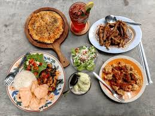
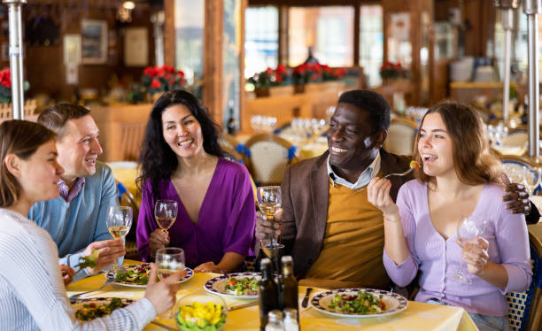
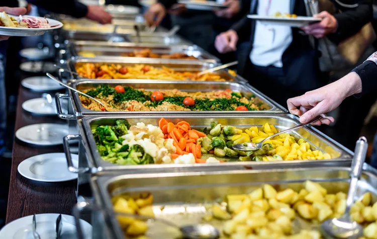

What I Offer

My services offer versatile and customised food experiences to diverse events.
1. Private Chef Experiences

Get a restaurant quality meal in the comfort of your home. These experiences are suitable in a small group setting like date nights, anniversaries or small intimate groups of friends and family.
What's included:
- Personalised menus to suit your needs.
- Supply of ingredients and cooking.
- On site cooking and plating.
- Cleaning up following the service.
With this service, clients can just sit back and have a good time, as everything else is handled professionally.
2. Event Catering

I offer catering services that cater to small events and celebrations that provide a more personalised alternative to traditional catering services.
My menus are designed to suit the theme and type of event. They are aimed at offering quality food that can be used to enhance the ambiance of the event.
What's included:
- Planning of menus based on events.
- Preparation of food.
- Timing and service coordination with the client.
Every event is handled with attention to detail to make sure it is enjoyable and well executed.
3. Personalised Food Services
Custom Menu Planning
This is a close collaboration with me, Chef Nozy, to create a menu that suits your taste, dietary needs and event goals.
Meal Prep Services
Convenient meal prep options for individuals or families looking for high quality and ready to eat meals.
What's included:
- Understanding client preferences.
- Menu recommendations and changes.
- Dietary needs (e.g. vegetarian, allergies) are considered.
- Portion planning and meal structuring
- Flexible delivery
This is best suited to clients who desire more a personalised and curated experience.